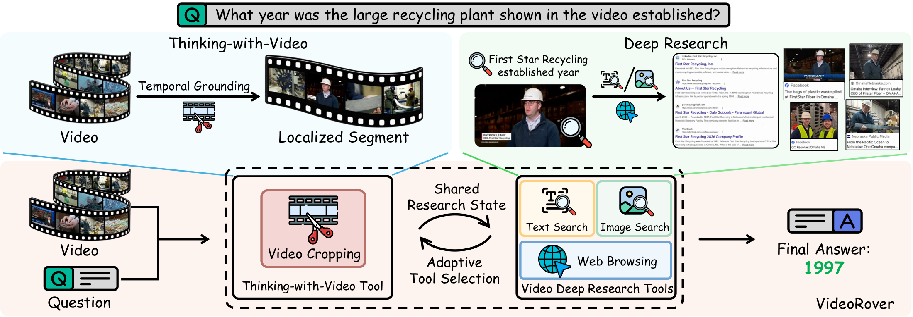

Thinking Beyond Videos
Open-world video understanding often requires locating sparse visual evidence in a video and acquiring knowledge that is contained neither in the video itself nor in the model's parameters. Thinking-with-Videos actively localizes such evidence, and Deep Research acquires such knowledge over multiple search steps, but the two directions are developed in isolation. To bridge this gap, we introduce VideoRover, a unified Video Deep Research framework that iteratively coordinates video cropping, multimodal search, and webpage browsing. Given a video–question pair, VideoRover conditions each action on the observations accumulated so far, so that localized clips anchor external search, while retrieved evidence triggers further video inspection and verification.
